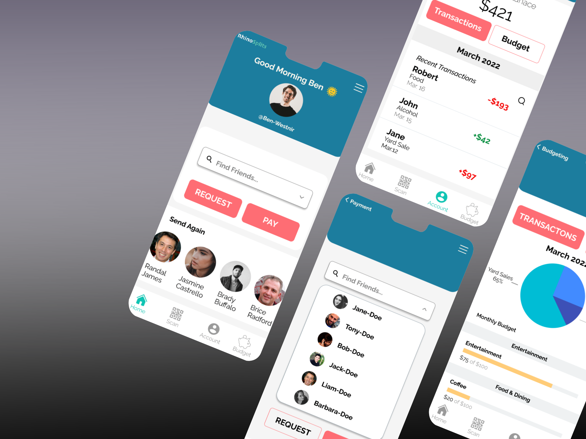

Design Process
1. Discover 2. Define 3. Design 4. Test 4. Deploy
Design Tools



Discover
Problem Statement
How might we... provide a peer-to-peer payment method for young, social people that remains convenient, quick, private and has little, to no, learning curve.
Research Plan
Activities and Interactions
- Going to dinner with friends
- Paying rent to a roomate
- Going out for drinks
- Buying from a garage sale or Marketplace
Environments
- Restaurants
- Garage Sales
- Bars
- Apartments
- House
Target Users
- College Students
- Tech Savy
- Social
Competitors
- Venmo
- Google Pay
- Apple Pay
- Samsung Pay
Competitive Anylisis
Since there was already an existing field of "digital wallets" on the market, I was able to analyze existing information about Venmo, Google Pay, Cash App, Apple Pay and Samsung Pay. While studying their apps, I compared their strength and weakness and was able to define areas of opportunity, where our app could supersede theirs.


After interviewing the users, my findings showed that the users wanted a more simplistic version of the competitor's apps. My sketches portray an app where you can send and receive money, check your transactions and create a budget, without having to comment or have your finaces displayed on a public feed.